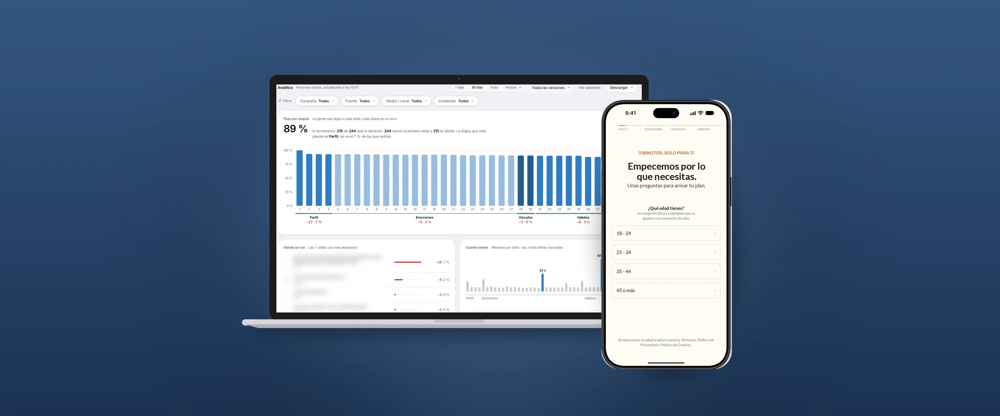
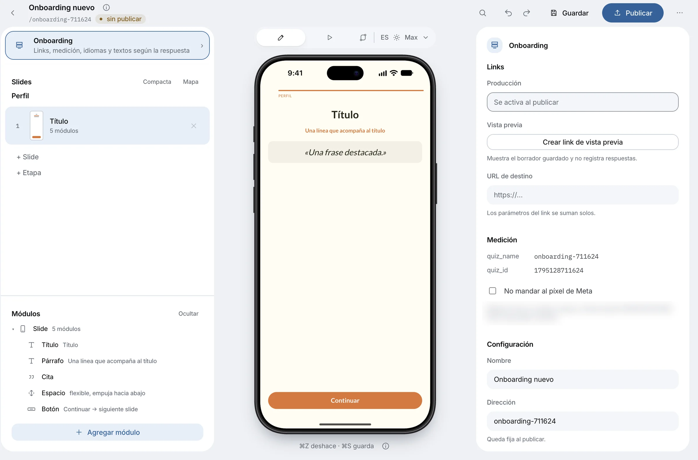
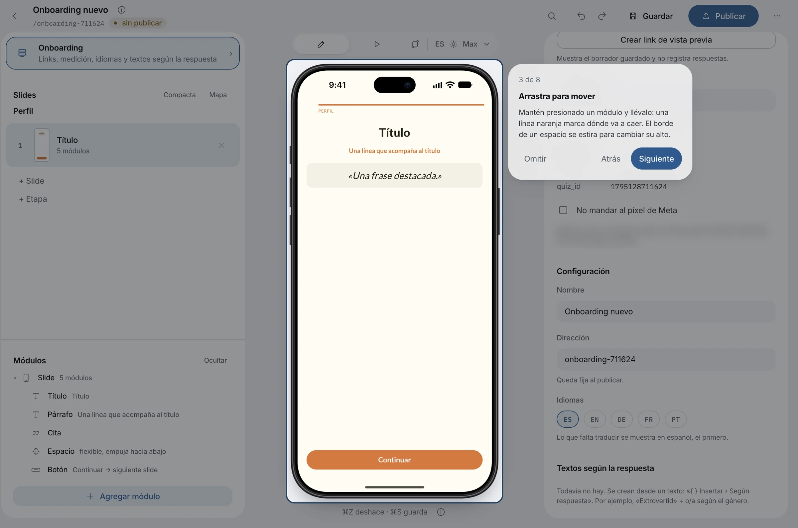
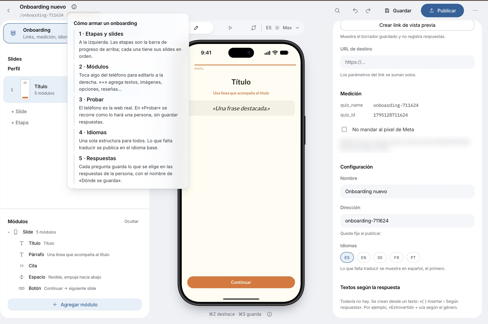
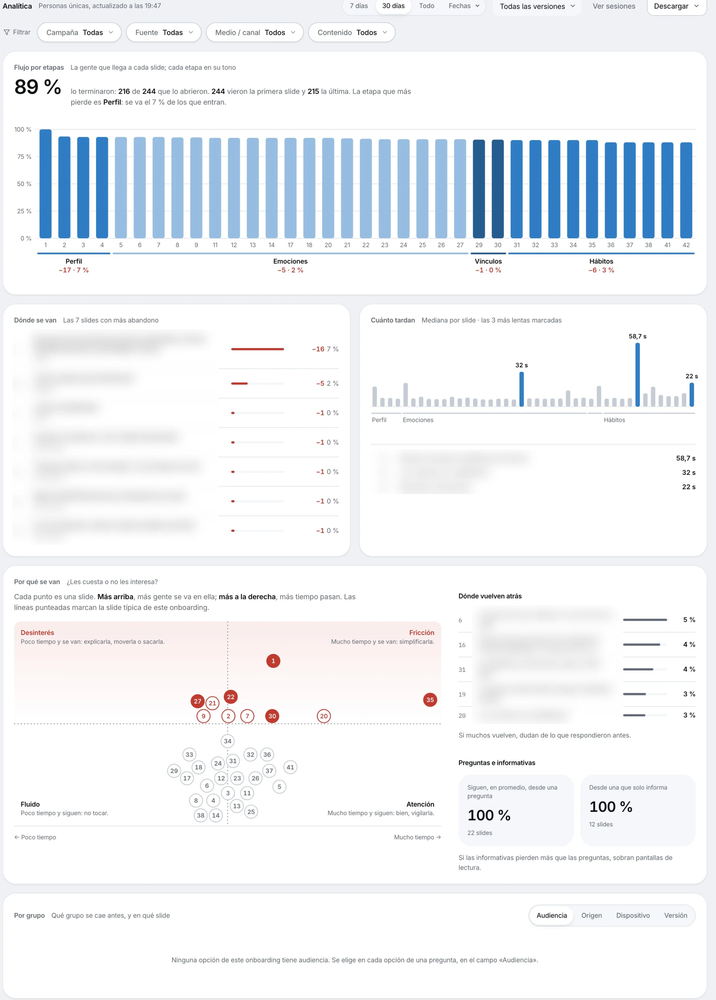
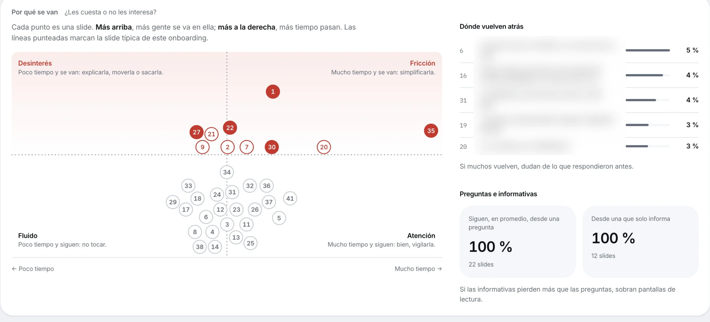
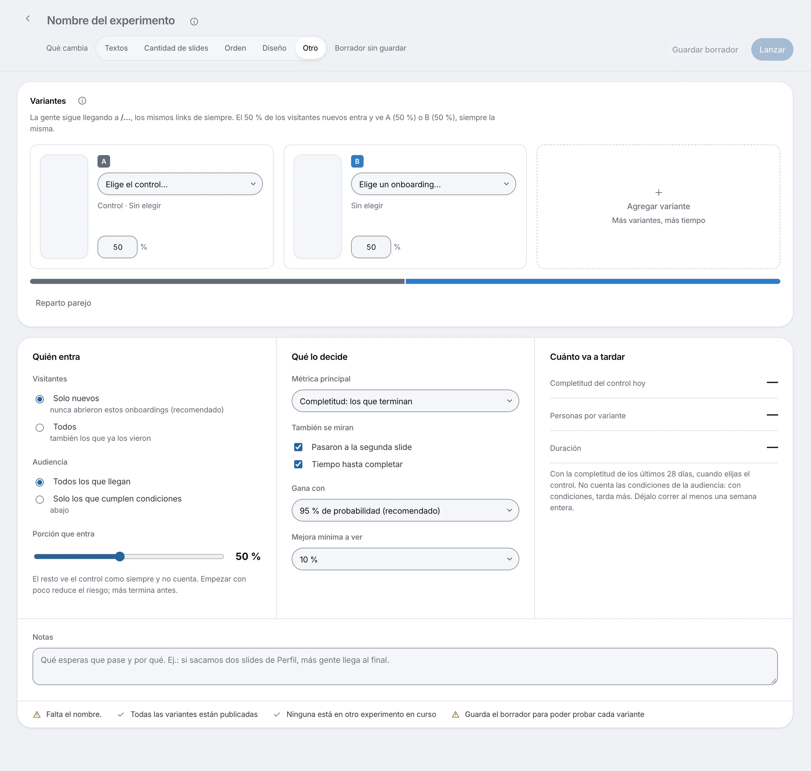
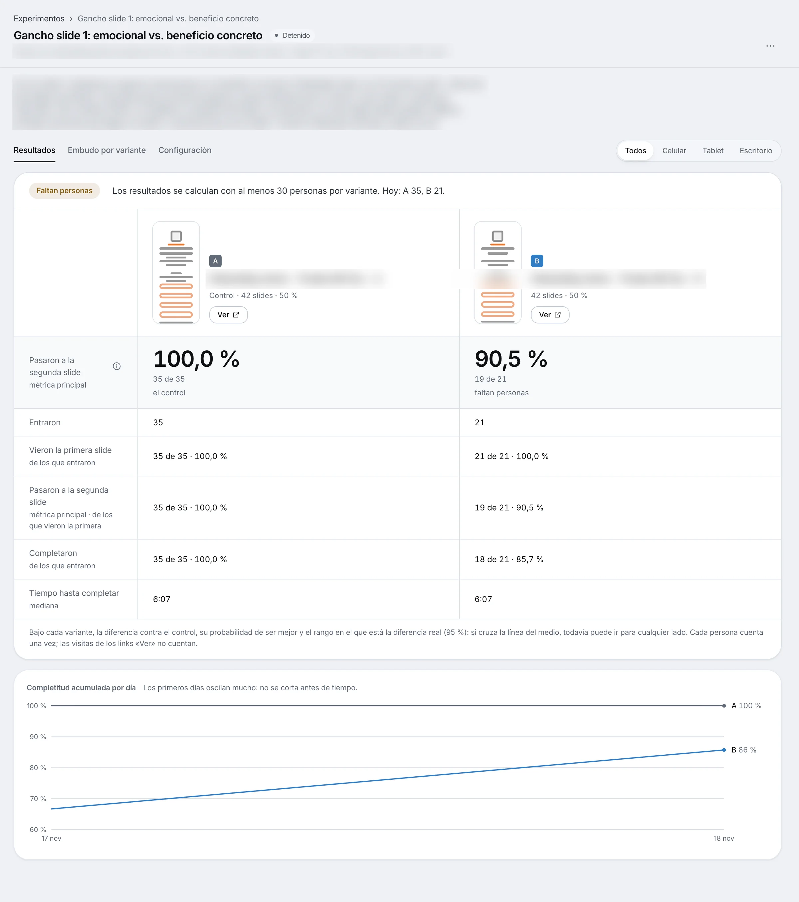

Onboarding Experimentation Platform
Designing the internal tool that lets a growth team build, measure and A/B test the top of a subscription funnel — without a developer.
01 — Context
A funnel that lives before the app
People click a paid ad, take a short web quiz, subscribe through carrier billing or a web checkout — and only then download the app. Campaign UTMs travel all the way, so every subscription traces back to its ad.
That quiz is the first product experience, and the one with the biggest drop-off.
The funnel
- Paid ad campaign UTMs
- Web quiz biggest drop-off
- Subscription carrier billing or web checkout
- App download
The web onboarding sits between the ad and the app.
02 — The problem
Every change needed a developer
Slow iteration
A new headline meant a ticket and a deploy, so ideas rarely got tested.
No way to compare
Without experiments, decisions came from opinion: better, or just different?
Fragmented data
Aggregate traffic only — nothing tied a session to the version it saw.
03 — My role
Every screen, plus how it measures and tests
All screens & flows
Builder, copy editing, analytics, experiments, sessions, activity log.
Analytics view
Where, when and why people drop off — by campaign.
A/B testing
End to end, from hypothesis to promoting a winner.
Measurement plan
Events, parameters, KPIs and UTM-based filters.
Results panel
Built from scratch together with the developer.
QA & roadmap
Instrumentation QA and the post-MVP roadmap.
04 — The builder
No code to ship a variant — measurement built in
The team assembles each onboarding slide by slide on a live phone preview. Tracking isn't an afterthought: it lives in the same panel as the content.

What a variant is made of
- Stages & slides — the progress bar, in order.
- Modules — text, options, images, reviews.
- Branches — slides that appear by answer.
- Languages — one structure, several copies.
- Measurement — a GA4 name per slide and the lead event for the ad pixel.
Content and tracking edited side by side, so no variant ships unmeasured.
05 — Onboarding the team
A tool for onboardings needed its own onboarding
The content team had to ship on their own from day one. So the tool got its own activation: an 8-step tour on first use and a guide one click away.


Left: one of the eight tour steps. Right: the guide, always behind the ⓘ.
06 — Measurement first
If you can't measure it, don't test it
Before drawing a screen, I defined how an experiment gets counted. GA4 covers the aggregate funnel; Firebase and our database keep each journey, from ad to subscription.
Assignment is sticky: the same visitor always sees the same version.
How a visit is counted
- Visitor arrives with campaign UTMs
- Variant assigned sticky across reloads
- Every event carries experiment ID · variant · UTMs
- GA4 funnel + Firebase/DB journey
Every event carries the experiment and the variant.
07 — Onboarding analytics
One screen to see where, when and why people leave
Unique people, refreshed during the day, cut by date, version and four UTM filters — any chart can be read for a single ad.

One view per onboarding, filterable by campaign UTMs.
How many finish
A bar per slide, grouped by stage, and the stage that loses most.
Where & how long
Top drop-off slides with their copy; the three slowest marked.
Why they leave
Every slide on time × drop-off. The quadrant names the fix.
What they doubt
Back-navigation per slide; split by audience, origin and device.

Reading the quadrant
- Disinterest — little time, they leave: explain, move or cut it.
- Friction — a lot of time, they leave: simplify it.
- Attention — a lot of time, they stay: keep an eye on it.
- Flow — little time, they stay: don't touch it.
Every slide placed on time spent and drop-off. The quadrant tells you what to do with it.
08 — Designing the A/B testing module
From hypothesis to launch in four steps
Modeled loosely on how RevenueCat runs paywall experiments, adapted to multi-step onboardings.

Creating an experiment, from hypothesis to launch.
1 · Hypothesis
What you expect to change and why; up to four variants.
2 · Audience
Who enters and how traffic splits.
3 · Metrics
Primary metric and minimum sample before reading.
4 · Launch
One last check before going live.
Guardrails by default
Rigor the team doesn't have to remember
New visitors only
People who already saw the onboarding don't skew it.
Ramp the traffic
Start with a portion; the rest sees the control.
95% to win · 10% minimum lift
Set before launch, not after peeking.
Minimum sample
No result until each variant has enough people.
A full week
Duration estimated from the control's real completion.
One test at a time
Variants locked while it runs; the winner becomes the control.

09 — Reading results
Results that state facts, not conclusions
Difference and probability of being better up front; the confidence range on hover.
Insights read like “Variant B lost more users on slide 3 than A” — never a recommendation. The team makes the call.
Difference and probability up front; confidence range on hover.
10 — Iterating with development
The developer's feedback made it better
I reviewed the wireframes with the developer early. Four changes came out of it:
11 — Rollout
An A/A test before any real experiment
- Definitions
- Assignment & measurement
- A/A test the gate
- Experiment creation
- Results
- Closing the loop
Same onboarding in both variants, to prove the measurement shows no false differences.
12 — Where it is now
Live and learning
First test · Hypothesis
A concrete benefit on slide 1 beats an emotional hook — people get what they receive for answering.
Primary metric
Reached slide 2 ÷ saw slide 1. Guardrails: completion and sign-ups at the destination.
The call
Validated first with simulated users, then stopped before the minimum sample — no winner declared on thin data.
Next: the three slides with the most drop-off, starting with whether asking for an email is worth what it costs.
13 — What I learned
What I'd take to the next project
Measurement before screens
The results view is only as good as the events behind it.
Metrics against real flows
“Reaching the last slide” sounded right until branching broke it.
Let people decide
A tool that states facts earns more trust than one that tells you what to think.